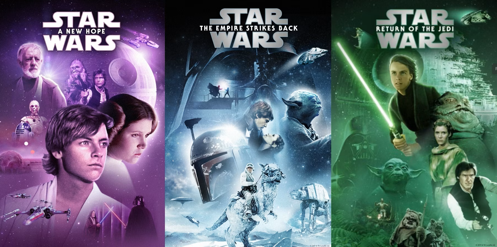
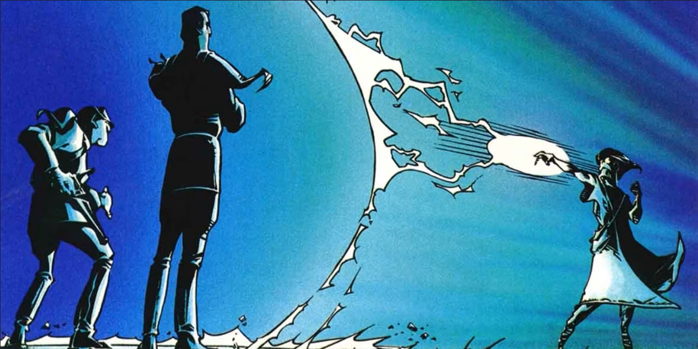
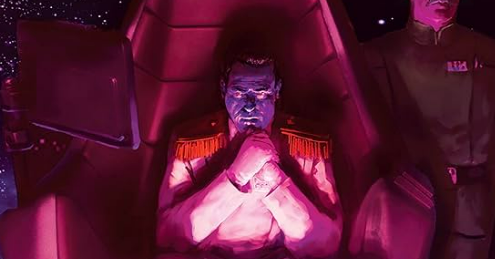
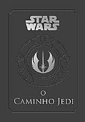
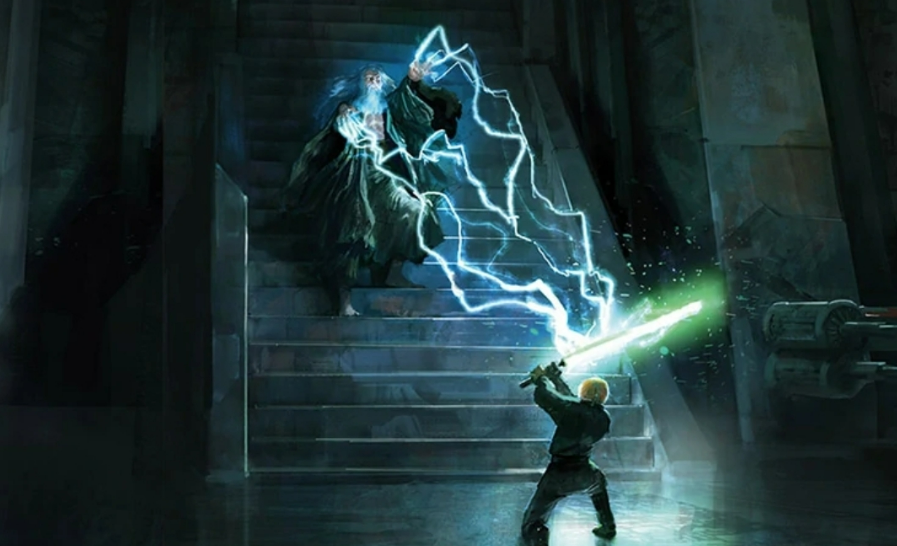

Teste o seu conhecimento sobre livros de Star Wars (Legends)! Responda um quiz com 10 perguntas e veja o resultado. Você poderá conferir seu histórico de acertos na seção Dashboard.
1ª Pergunta:
O personagem Darth Bane é mais conhecido por ter criado:
2ª Pergunta:
Onde se passa a maior parte da história no livro Troopers da Morte?
3ª Pergunta:

Qual livro deu continuidade a história dos filmes originais?
4ª Pergunta:

A Trilogia Thrawn apresenta uma criatura capaz de criar uma barreira contra a Força. Qual é o nome desta criatura?
5ª Pergunta:

Qual era o cargo do antagonista Thrawn, na trilogia de mesmo nome?
6ª Pergunta:

Cronologicamente, quando foi escrito o livro O Caminho Jedi, dentro do universo de Star Wars?
7ª Pergunta:
Qual característica dos livros da coleção Secrets of the Galaxy os diferencia dos demais livros?
8ª Pergunta:
No livro Sombras do Império, o principal objetivo do antagonista Príncipe Xizor era:
9ª Pergunta:
Em qual época se passa a Trilogia Darth Bane?
10ª Pergunta:

Quem é o 2º antagonista principal da Trilogia Thrawn?